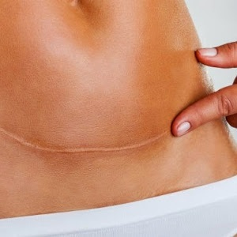

FIZJOTERAPIA KOBIET PO URODZENIU DZIECKA
Najczęstsze problemy występujące u kobiet po urodzeniu dziecka, w dużej mierze wiążą się z utratą funkcji mięśni lokalnie stabilizujących. Zmiany zachodzące w ciele kobiety w czasie ciąży osłabiają ich funkcję, dodatkowo poród drogami natury osłabia- a nawet uszkadza mięśnie dna miednicy, poród przez cesarskie cięcie uszkadza główny mięsień stabilizujący- mięsień poprzeczny. Główny nacisk w fizjoterapii kobiet w okresie połogu i po powinien być związany z przywróceniem utraconych funkcji mięśni głębokiej stabilizacji tzw. mięśni core.
Rozejście mięśni prostych brzucha (rozstęp kresy białej)
Mięśnie proste brzucha pod wpływem nacisku rosnącej macicy i relaksyny zwłaszcza w ostatnich tygodniach ciąży ulegają wydłużeniu i rozciągnięciu. Otyłość, zbyt słabe lub zbyt mocne mięśnie brzucha, duża ilość wód płodowych, ciąża mnoga, liczne ciąże, praca wymagająca dźwigania czy duża masa urodzeniowa dziecka mogą spowodować rozejście mięśni prostych brzucha i rozstęp kresy białej. Objawia się to charakterystycznym układaniem się brzucha w stożek, zwłaszcza podczas podnoszenia się z pozycji leżącej, po porodzie widoczne są i wyczuwalne ruchy jelit blisko powierzchni skóry, czasem pofałdowanie skóry układa się w kształt rozejścia, wyczuwalna jest tzw. „dziura” w brzuchu, a brzuch po posiłku lub wieczorem wygląda na ciążowy.
W terapii stosuje się:
– Ćwiczenia mięśni lokalnie stabilizujących, z naciskiem na mięsień poprzeczny brzucha i mięśnie dna miednicy
– Korektę postawy z kontrolowaniem mięśni brzucha
– Kinesiology Taping
Zaburzenie funkcji mięśni dna miednicy, wysiłkowe nietrzymanie moczu
Ciąża i poród bardzo mocno obciążają mięśnie dna miednicy. Osłabienie i dysfunkcja tych mięśni może wiązać się z problemami związanymi z wysiłkowym nietrzymaniem moczu, obniżeniem/wypadaniem narządów rodnych, zaburzeniem funkcji seksualnych, bólem stawów miednicy, kręgosłupa, bioder, bolesnymi miesiączkami czy zaburzeniami trawienia. Przed i po porodzie należy wzmacniać mięśnie dna miednicy stosując odpowiednie ćwiczenia, aby zapobiec problemom związanym z niewydolnością tych mięśni.
Terapia kobiet z dysfunkcją mięśni dna miednicy polega przede wszystkim na:
– Ćwiczenia przywracające funkcję mięśni stabilizujących, z naciskiem na warstwę wewnętrzną mięśni dna miednicy
– Edukacja pacjentki (odnośnie czynność dnia codziennego i czynności, które będą sprzyjały przywróceniu utraconej funkcji mięśni dna miednicy)
– Profilaktyka obciążeń i korekta postawy
Ból kręgosłupa
Kobietom po porodzie i w wyniku zmiany postawy ciała często towarzyszą bóle kręgosłupa, zarówno lędźwiowego jak i piersiowego. Obserwujemy również zwiększone napięcie w obrębie karku i obręczy barkowej. Celem postępowanie fizjoterapeutycznego jest usunięcie przyczyny dolegliwości, jak i również edukacja pacjentki odnośnie profilaktyki.
W tym celu w terapii bólów kręgosłupa wykorzystuję m.in.:
– Metody neurofizjologiczne m.in. McKenzie, PNF, neuromobilizacja
– Terapię manualną
– Masaż
– Korektę postawy/edukacja
– Kinesiology Taping
Ból stawów obwodowych tj. kolan, bioder, nadgarstków, łokci, barków
Okres ciąży wiąże się z dużymi zmianami w organizmie kobiety. Przy słabym gorsecie mięśniowym w obrębie stawów obwodowych mogą pojawiać przeciążenia powodujące bóle. W terapii wykorzystuję
– Ćwiczenia wzmacniające, rozciągające z naciskiem na głębokie mięśnie stabilizujące
– Terapia manualna
– Profilaktykę przeciążeń z korektą postawy
– Kinesiology Taping
Blizna po cesarskim cięciu
Blizna zbudowana jest z tkanki łącznej włóknistej, która wyraźnie różni się od otaczającej ją skóry kolorem, strukturą, elastycznością i wytrzymałością. Blizna do 12 miesięcy od powstania nazywana jest blizną świeżą, nie do końca uformowaną. Jej przebudowa trwa nawet 2 lata. Cięcie cesarskie jest traktowane jako poważna operacja chirurgiczna w obrębie brzucha, która dotyczy wielu warstw. Każdą bliznę bez względu na to czy jest po cesarskim cięciu czy po innym zabiegu chirurgicznym należy mobilizować. Nie mobilizowana blizna może powodować zrosty i sklejenia powięziowe.
W fizjoterapii wykorzystuje się:
– Mobilizacja blizny
– Kinesiology Taping
Nawały mleczne, ból piersi
Bezpośrednio po porodzie częstym problemem kobiet są nawały mleczne, które mogą prowadzić do stanów zapalnych gruczołu piersiowego. Gdy pierś nie jest systematycznie opróżniana dochodzi do większych napięć w systemie skórno- powięziowym i podrażnienia receptorów, a to z kolei może powodować ból. Kinesiology Taping zmniejsza napięcie skóry w obrębie napiętej piersi i tym samym redukuje ból, wspomaga laktację i umożliwia mleku swobodnie docierać do brodawki sutkowej. Aplikacje Kinesiology Tapingu nie przeszkadzają w karmieniu dziecka, a nawet bardziej skupiają uwagę niemowlęcia na oklejonej plastrami piersi. Plastrowanie stosowane jest również jako metoda wspomagająca zapobieganie nawałom mlecznym.
Fizjoterapia/ Profilaktyka
– Ćwiczenia mięśni dna miednicy, z naciskiem na warstwę wewnętrzną
– Ćwiczenia mięśni lokalnie stabilizujących
– Korekta postawy/ edukacja
– Ćwiczenia rozciągające mięśnie przykurczone i wzmacniające mięśnie osłabione/ nadmiernie rozciągnięte
– Kinesiology Taping
– Mobilizacja blizn po cięciu cesarskim
– Terapia manualna
– Masaż
– Ćwiczenia wg metod neurofizjologicznych np. PNF, McKenzie, Neuromobilizacja